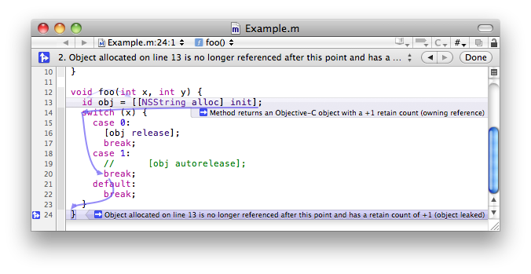
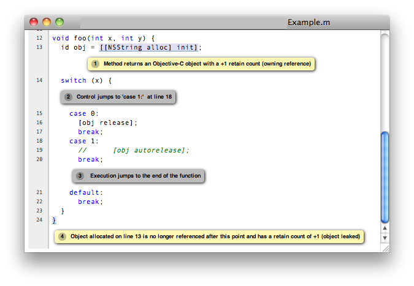

Clang Static AnalyzerThe Clang Static Analyzer is a source code analysis tool that finds bugs in C, C++, and Objective-C programs. Currently it can be run either from the command line or if you use macOS then within Xcode. When invoked from the command line, it is intended to be run in tandem with a build of a codebase. The analyzer is 100% open source and is part of the Clang project. Like the rest of Clang, the analyzer is implemented as a C++ library that can be used by other tools and applications. DownloadMac OS X
Other PlatformsFor other platforms, please follow the instructions for building the analyzer from source code.
|

Viewing static analyzer results in Xcode

Viewing static analyzer results in a web browser
|
{kind=link}
{kind=link}
What is Static Analysis?
The term "static analysis" is conflated, but here we use it to mean a collection of algorithms and techniques used to analyze source code in order to automatically find bugs. The idea is similar in spirit to compiler warnings (which can be useful for finding coding errors) but to take that idea a step further and find bugs that are traditionally found using run-time debugging techniques such as testing.
Static analysis bug-finding tools have evolved over the last several decades from basic syntactic checkers to those that find deep bugs by reasoning about the semantics of code. The goal of the Clang Static Analyzer is to provide a industrial-quality static analysis framework for analyzing C, C++, and Objective-C programs that is freely available, extensible, and has a high quality of implementation.
Part of Clang and LLVM
As its name implies, the Clang Static Analyzer is built on top of Clang and LLVM. Strictly speaking, the analyzer is part of Clang, as Clang consists of a set of reusable C++ libraries for building powerful source-level tools. The static analysis engine used by the Clang Static Analyzer is a Clang library, and has the capability to be reused in different contexts and by different clients.
Important Points to Consider
While we believe that the static analyzer is already very useful for finding bugs, we ask you to bear in mind a few points when using it.
Work-in-Progress
The analyzer is a continuous work-in-progress. There are many planned enhancements to improve both the precision and scope of its analysis algorithms as well as the kinds of bugs it will find. While there are fundamental limitations to what static analysis can do, we have a long way to go before hitting that wall.
Slower than Compilation
Operationally, using static analysis to automatically find deep program bugs is about trading CPU time for the hardening of code. Because of the deep analysis performed by state-of-the-art static analysis tools, static analysis can be much slower than compilation.
While the Clang Static Analyzer is being designed to be as fast and light-weight as possible, please do not expect it to be as fast as compiling a program (even with optimizations enabled). Some of the algorithms needed to find bugs require in the worst case exponential time.
The Clang Static Analyzer runs in a reasonable amount of time by both bounding the amount of checking work it will do as well as using clever algorithms to reduce the amount of work it must do to find bugs.
False Positives
Static analysis is not perfect. It can falsely flag bugs in a program where the code behaves correctly. Because some code checks require more analysis precision than others, the frequency of false positives can vary widely between different checks. Our long-term goal is to have the analyzer have a low false positive rate for most code on all checks.
Please help us in this endeavor by reporting false positives. False positives cannot be addressed unless we know about them.
More Checks
Static analysis is not magic; a static analyzer can only find bugs that it has been specifically engineered to find. If there are specific kinds of bugs you would like the Clang Static Analyzer to find, please feel free to file feature requests or contribute your own patches.